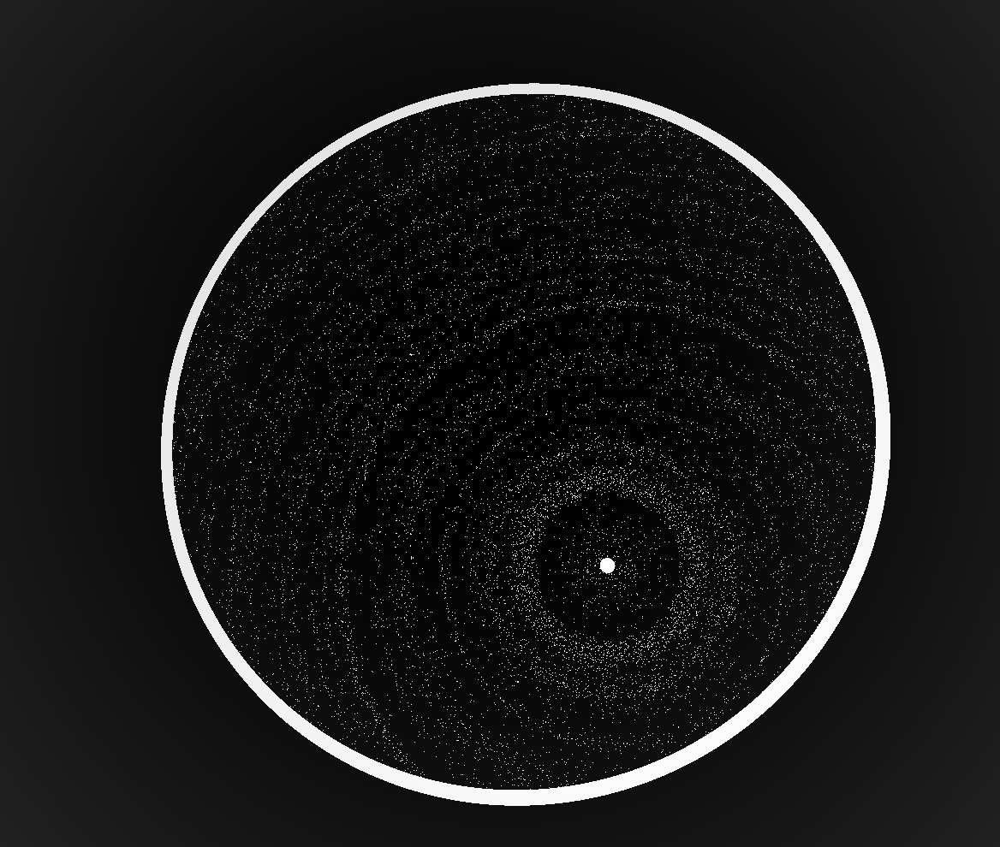
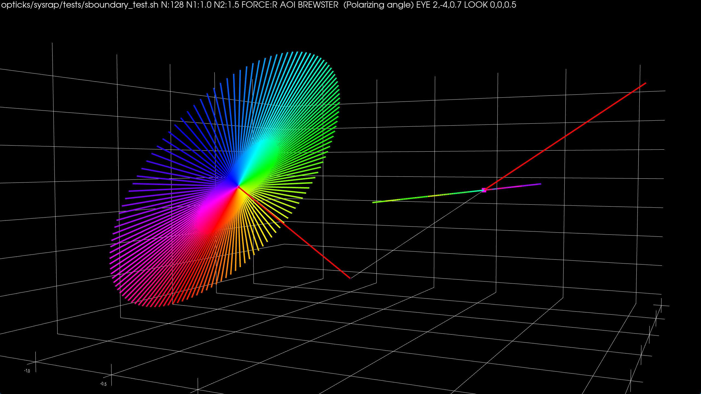

Opticks : SEMINAR : Optical Photon Simulation via GPU Ray Tracing from NVIDIA OptiX
The Story of Opticks, applying NVIDIA OptiX GPU ray tracing to Optical Photon Simulation
Open source, https://bitbucket.org/simoncblyth/opticks
Simon C Blyth, IHEP, CAS — IHEP EPD Seminar — ?? April 2024
Outline : Opticks First Incarnation

- Optical Photon Simulation : Problem and background
- JUNO Optical Photon Simulation Problem...
- Optical photons limit many simulations => lots of interest in Opticks
- Optical Photon Simulation Ray Traced Image Rendering
- Rasterization vs Ray Tracing
- Spatial index acceleration structure, BVH algorithm
- CPU vs GPU architectures, Latency vs Throughput
- Opticks Early History
- pre-History : Chroma investigations
- Triangulated Geometry, G4DAE Geometry exporter
- Chroma + G4DAE -> NVIDIA OptiX + "Opticks"
- Handling Huge Geometry (eg JUNO) with instancing
- NVIDIA OptiX 5 Ray Tracing Engine
- Triangulated Geometry Problems
- Fully Analytic CSG
- Analytic PMT (12 parts, not 2928 triangles)
- GPU Geometry starts from ray-primitive intersection
- Torus : much more difficult/expensive than other primitives
- Constructive Solid Geometry (CSG) : Which intersect ?
- CSG Problems : deep trees, coincident faces
- Opticks Instancing : "Factorizes" Geometry
- Porting the physics
- Translate Geant4 Optical Physics to GPU (OptiX/CUDA)
- Optical Photon Simulation : Deciding history on way to boundary
- Validation of Opticks Simulation by Comparison with Geant4
- Performance : Scanning from 1M to 400M Photons
- NVIDIA Giveth and NVIDIA Taketh away ...
Outline : Opticks Reborn
- NVIDIA OptiX 7
- Entirely new thin API => Full Opticks Re-implementation
- OptiX Ray Tracing Engine -- Accessible GPU Ray Tracing
- Opticks Re-implemented
- "Foundry" Model : Shared CPU/GPU Geometry Context
- Two-Level Hierarchy : Instance transforms (IAS) over Geometry (GAS)
- Geometry Model Translation : Geant4 => CSGFoundry => NVIDIA OptiX 7
- n-Ary CSG "List-Nodes"
- Geant4 + Opticks + NVIDIA OptiX 7 : Hybrid Workflow
- Primary Packages and Structs Of Re-Implemented Opticks
- QUDARap : CUDA Optical Simulation Implementation
- Ray trace render performance scanning
- Validation
- Selection of DetSim issues revealed/studied using Opticks
- PMT Torus neck
- Geometry Overlaps
- Compare Reflected Polarization Impls for Brewster Angle Incidence
- Re-implemented JUNO PMT Optical Model
- G4OpBoundaryProcess : customized for JUNO PMT Optical Model (POM)
- Multi-Layer Thin Film (A,R,T) Calc using TMM (Custom4 Package)
- Summary + Links
- Acknowledgements : Geant4 Collab. + Dark Matter Search Community + NVIDIA
- Extras
- NVIDIA Ada Lovelace : 3rd Generation RTX, RT Cores in Data-Center
JUNO Optical Photon Simulation Problem...
Optical photons limit many simulations => lots of interest in Opticks
| EXPT |
Reactor neutrino |
| Daya Bay |
neutrino oscillations |
| JUNO |
mass heirarchy + oscillations => NVIDIA CN Contacts |
| |
Long baseline neutrino beam |
| DUNE |
FermiLab->Sanford, LAr TPC, => Assistance from Fermilab Geant4 Group |
| |
Neutrinoless double beta decay, dark matter, other search |
| LZ |
LUX-ZEPLIN dark matter experiment, Sandford => NVIDIA US Contacts |
| LEGEND |
Large Enriched Germanium Experiment, Gran Sasso/SNOLAB |
| SABRE |
dark matter direct-detection, Australia |
| AMoRE |
Mo-based Rare process Experiment, S.Korea |
| nEXO |
next Enriched Xenon Observatory, LLNL |
| |
Neutrino telescope |
| KM3Net |
Cubic Kilometre Neutrino Telescope, Mediterranean |
| IceCube |
IceCube Neutrino Observatory, South Pole |
| |
Air shower : gamma-ray and cosmic-ray observatory |
| LHAASO |
Large High Altitude Air Shower Observatory, Sichuan |
| |
Accelerator |
| LHCb-RICH |
LHCb ring imaging Cherenkov sub-detector, CERN => NVIDIA EU Contacts |
Optical Photon Simulation Ray Traced Image Rendering
- simulation
- photon parameters at sensors (PMTs)
- rendering
- pixel values at image plane
Much in common : geometry, light sources, optical physics
- both limited by ray geometry intersection, aka ray tracing
Many Applications of ray tracing :
- advertising, design, architecture, films, games,...
- -> huge efforts to improve hw+sw over 30 yrs
Rasterization vs Ray-tracing
Spatial Index Acceleration Structure
CPU vs GPU architectures, Latency vs Throughput
Waiting for memory read/write, is major source of latency...
- CPU : latency-oriented : Minimize time to complete single task : avoid latency with caching
- complex : caching system, branch prediction, speculative execution, ...
- GPU : throughput-oriented : Maximize total work per unit time : hide latency with parallelism
- many simple processing cores, hardware multithreading, SIMD (single instruction multiple data)
- simpler : lots of compute (ALU), at expense of cache+control
- design assumes abundant parallelism
Effective use of Totally different processor architecture -> Total reorganization of data and computation
Understanding Throughput-oriented Architectures
https://cacm.acm.org/magazines/2010/11/100622-understanding-throughput-oriented-architectures/fulltext
Understanding GPU Graphical Origins -> Effective GPU Computation
GPUs evolved to rasterize 3D graphics at 30/60 fps
- 30/60 "launches" per second, each handling millions of items
- literally billions of small "shader" programs run per second
Simple Array Data Structures (N-million,4)
- millions of vertices, millions of triangles
- vertex: (x y z w)
- colors: (r g b a)
Constant "Uniform" 4x4 matrices : scaling+rotation+translation
- 4-component homogeneous coordinates -> easy projection
Graphical Experience Informs Fast Computation on GPUs
- array shapes similar to graphics ones are faster
- "float4" 4*float(32bit) = 128 bit memory reads are favored
- Opticks photons use "float4x4" just like 4x4 matrices
- GPU Launch frequency < ~30/60 per second
- avoid copy+launch overheads becoming significant
- ideally : handle millions of items in each launch
How to Make Effective Use of GPUs ? Parallel / Simple / Uncoupled
- Abundant parallelism
- many thousands of tasks (ideally millions)
- Low register usage : otherwise limits concurrent threads
- simple kernels, avoid branching
- Little/No Synchronization
- avoid waiting, avoid complex code/debugging
- Minimize CPU<->GPU copies
- reuse GPU buffers across multiple CUDA launches

How Many Threads to Launch ?
- can (and should) launch many millions of threads
- mince problems as finely as feasible
- maximum thread launch size : so large its irrelevant
- maximum threads inflight : #SM*2048 = 80*2048 ~ 160k
- best latency hiding when launch > ~10x this ~ 1M
Understanding Throughput-oriented Architectures
https://cacm.acm.org/magazines/2010/11/100622-understanding-throughput-oriented-architectures/fulltext
NVIDIA Titan V: 80 SM, 5120 CUDA cores
Opticks pre-History : Chroma investigations
Experimented with Chroma to speedup Daya Bay optical sim:
- developed "G4DAE" Geant4 exporter of 3D DAE files
- added DAE import to my Chroma fork
- bought macbook pro (NVIDIA Geforce 750M GPU)
Chroma : Disadvantages
- No use of ray trace engine, eg NVIDIA OptiX
- No use of dedicated ray trace hardware RT cores (RTX)
Chroma : Fundamental Problem, triangles only
- best available polygonization, G4Polyhedron
- some solids (eg G4Polycone) yield "cleaved" meshes
- viz. bug for Geant4, broken geometry for Chroma
- OpenMesh surgery possible, but not automatic
chroma_camera_raycast
(g4daeview.py) Chroma Raycast of Daya Bay geometry (3x3 CUDA kernel lunches, 1.8s for 1.23M pixels, Geforce 750M GPU)
G4DAE : DYB pool bottom, Chroma raycast
(g4daeview.py) Chroma raycast render of triangulated geometry
G4DAE : DYB pool bottom, OpenGL render
(g4daeview.py) OpenGL rasterized render of triangulated geometry
Triangulated Geometry : Great for Visualization
Many apps/libs can view/edit DAE/COLLADA files
- Meshlab, Blender, Sketchup, ...
- macOS: Finder/Quickview/Preview/Xcode
- threejs, pycollada, SceneKit, ...
- OpenGL, WebGL, pyopengl, glumpy
Triangle Visualization Advantage
- GPUs evolved to rasterize trianglated geometry
- Developed pyopengl/pycollada renderer
- entire geometry in single OpenGL draw call
- shockingly fast on mobile GPU
CUDA/OpenGL interoperation
- share GPU buffers between compute and visualization
- visualize steps of millions of photons within geometry
Daya Bay Chroma Photon Propagation (1)
(g4daeview.py) Chroma GPU photon propagation at 12 nanoseconds. The photons are generated by Geant4
simulation of a 100 GeV muon travelling from right to left.
Photon colors indicate reemission (green), absorption(red),
specular reflection (magenta), scattering(blue), no history (white).
Daya Bay Chroma Photon Propagation (2)
(g4daeview.py) Chroma GPU photon propagation at 14 nanoseconds.
The interface provides interactive control of the propagation time
allowing any stage of the propagation to be viewed by
scrubbing time backwards/forwards. The speed of this visualization
is achieved by interoperation of CUDA kernels and OpenGL shaders accessing
the same GPU resident photon propagation data.
Daya Bay Chroma Photon Propagation (3)
(g4daeview.py) Initial photon positions of a Geant4 simulated muon that crosses
between the Dayabay Near hall ADs. Colors represent photon wavelengths.
Optical photons: collected in G4 StackAction, serialized, sent over ZeroMQ, deserialized,
presented using OpenGL GLSL shaders.
Opticks History : Chroma + G4DAE -> NVIDIA OptiX + "Opticks"
Why switch to NVIDIA OptiX ?
- OptiX : transparent multi-GPU with no effort
- NVIDIA supported package
- NVIDIA expertise on keeping GPUs busy
- Chroma implemented with python/numpy/pycuda
- C++ impl. needed for easy Geant4 integration
DBNS geometry raycast comparison using mobile GPU
- NVIDIA OptiX : interactive ~30 fps raycasting
- Chroma : 1.8s per frame
Performance improvement ~50x
"Opticks" started as synthesis:
- Chroma : high level propagation loop structure
- Geant4 : simulation details
- Graphics : performance techniques
Package name "Opticks", taken from world changing publication:
- Sir Isaac Newton FRS "Opticks: or, A Treatise of the Reflexions, Refractions, Inflexions and Colours of Light."
GGeoView
(GGeoView) Cerenkov photons from an 100 GeV muon travelling from right to left across Dayabay AD.
Primaries are simulated by Geant4, Cerenkov "steps" of the primaries are transferred to the GPU.
The dots represent OptiX calculated first intersections of GPU generated photons with colors
corresponding to material boundaries: (red) GdDopedLS/Acrylic
(green) LiquidScintillator/Acrylic, (blue) Acrylic/LiquidScintillator,
(white) IwsWater:UnstStainlessSteel, (grey) others.
The red lines represent the positions and directions of the "steps" with an
arbitrary scaling for visibility.
Opticks History : Handling Huge Geometry (eg JUNO)
Opticks History : Handling Huge Geometry (eg JUNO) with instancing
Instancing in OptiX and OpenGL avoids repetition of geometry data on GPU for repeated elements (eg PMTs).
[Image is composite of OpenGL rasterized event representation and OptiX raytraced triangulated geom]
Opticks History : Triangulated Geometry Problems
- G4Polyhedron tesselation of union solids -> cleaved mesh
- visualization bug for Geant4, broken geometry if rely on tesselation for simulation
- manifests as reversed normals causing material mis-assignment
- ~10% of Daya Bay solid tesselations had issues : fixed some with OpenMesh surgery : unable to automate
- even when not broken, usually approximate geometry : cannot precisely match Geant4
- PMT "Disco Ball" effect (smoothed vertex normals can reduce this)
triangulated geometry : not practical for general simulation, but very useful for fast visualization
Opticks History : Analytic PMT (12 parts, not 2928 triangles)
NVIDIA OptiX provided no intersection (it just accelerated intersection)
- need first principals intersection code, solving polynomials
- started with PMT specific intersection code
Partition PMT at constituent joins (semi-manually)
Daya Bay Opticks Propagation : Triangulated + Analytic PMT
Daya Bay Opticks Propagation : Triangulated geometry with Analytic PMT
[composite OptiX raytrace geometry + OpenGL rasterized Cerenkov photons]
Opticks : GPU Geometry starts from ray-primitive intersection
- 3D parametric ray : ray(x,y,z;t) = rayOrigin + t * rayDirection
- implicit equation of primitive : f(x,y,z) = 0
- -> polynomial in t , roots: t > t_min -> intersection positions + surface normals
Torus : much more difficult/expensive than other primitives
3D parametric ray : ray(x,y,z;t) = rayOrigin + t * rayDirection
- ray-torus intersection -> solve quartic polynomial in t
- A t^4 + B t^3 + C t^2 + D t + E = 0
High order equation
- very large difference between coefficients
- varying ray -> wide range of very coefficients
- numerically problematic, requires double precision
- several mathematical approaches used, work in progress
Best Solution : replace torus
- eg model PMT neck with hyperboloid, not cylinder-torus
Torus : different artifacts as change implementation/params/viewpoint
- Only use Torus when there is no alternative
- especially avoid CSG combinations with Torus
Constructive Solid Geometry (CSG)
Simple by construction definition, implicit geometry.
- A, B implicit primitive solids
- A + B : union (OR)
- A * B : intersection (AND)
- A - B : difference (AND NOT)
- !B : complement (NOT) (inside <-> outside)
CSG expressions
- non-unique: A - B == A * !B
- represented by binary tree, primitives at leaves
3D Parametric Ray : ray(t) = r0 + t rDir
Ray Geometry Intersection
- primitive : find t roots of implicit eqn
- composite : pick primitive intersect, depending on CSG tree
How to pick exactly ?
CSG : Which primitive intersect to pick ?
Classical Roth diagram approach
- find all ray/prim intersects
- recursively combine inside intervals using CSG operator
- works from leaves upwards
Computational requirements:
- find all intersects, store them, order them
- recursive traverse
BUT : High performance on GPU requires:
- massive parallelism -> more the merrier
- low register usage -> keep it simple
- small stack size -> avoid recursion
Classical approach not appropriate on GPU
Developed GPU CSG Impl. based on short note with the idea
- "Ray Tracing CSG Objects Using Single Hit Intersections", Andrew Kensler (2006) 3 page note
- http://xrt.wikidot.com/doc:csg corrections from author of XRT Renderer

Ray intersection with general CSG binary trees, on GPU
Pick between pairs of nearest intersects, eg:
| UNION tA < tB |
Enter B |
Exit B |
Miss B |
|---|
| Enter A |
ReturnA |
LoopA |
ReturnA |
| Exit A |
ReturnA |
ReturnB |
ReturnA |
| Miss A |
ReturnB |
ReturnB |
ReturnMiss |
- Nearest hit intersect algorithm [1] avoids state
- sometimes Loop : advance t_min , re-intersect both
- classification shows if inside/outside
- Evaluative [2] implementation emulates recursion:
- recursion not allowed in OptiX intersect programs
- bit twiddle traversal of complete binary tree
- stacks of postorder slices and intersects
- Identical geometry to Geant4
- solving the same polynomials
- near perfect intersection match
- [1] Ray Tracing CSG Objects Using Single Hit Intersections, Andrew Kensler (2006)
- with corrections by author of XRT Raytracer http://xrt.wikidot.com/doc:csg
- [2] https://bitbucket.org/simoncblyth/opticks/src/tip/optixrap/cu/csg_intersect_boolean.h
- Similar to binary expression tree evaluation using postorder traverse.
CSG Complete Binary Tree Serialization -> simplifies GPU side
Geant4 solid -> CSG binary tree (leaf primitives, non-leaf operators, 4x4 transforms on any node)
Serialize to complete binary tree buffer:
- no need to deserialize, no child/parent pointers
- bit twiddling navigation avoids recursion
- simple approach profits from small size of binary trees
- BUT: very inefficient when unbalanced
Height 3 complete binary tree with level order indices:
depth elevation
1 0 3
10 11 1 2
100 101 110 111 2 1
1000 1001 1010 1011 1100 1101 1110 1111 3 0
postorder_next(i,elevation) = i & 1 ? i >> 1 : (i << elevation) + (1 << elevation) ; // from pattern of bits
Postorder tree traverse visits all nodes, starting from leftmost, such that children
are visited prior to their parents.
Opticks Analytic Daya Bay Near Site, GPU Raytrace
Pure analytic CSG Daya Bay near geometry, auto-converted from Geant4 to Opticks GPU geometry,
NVIDIA OptiX GPU raytrace render [no triangles]
j1808_top_rtx
Pure analytic CSG JUNO geometry, auto-converted from Geant4 to Opticks GPU geometry,
NVIDIA OptiX GPU raytrace render [no triangles] (GGeoView)
j1808_top_ogl
Approximate triangulated JUNO geometry [note impingement of torus guide tube and acrylic "sphere"], OpenGL rasterized render (GGeoView)
Subtraction of thin CSG_CYLINDER -> speckle in the hole
CSG_DISC implemented to handle disc like cylinders : intersects at middle (z1+z2)/2 and offsets, avoids issue

Coincident Faces are Primary Cause of Issues : Fake Intersects
Coincidences common (alignment too tempting?). To fix:
- A-B : grow correct dimension of subtracted shape
- A+B : grow smaller interface shape into bigger, making join
- case-by-case fixes straightforward, not so easy to automate
- need to design joints like a carpenter (with overlaps)
Debugging Coincident Subtractions
Switching subtraction into union with complemented -> can see whats subtracted.
Opticks : translates G4 geometry to GPU, without approximation
Geant4 Solids+Volumes -> Opticks CSG,GGeo -> GPU
- simpler : no G4DAE+GDML export/import
Structure of Volumes
- repeated geometry instances identified (progeny digests)
- instance transforms used in OptiX/OpenGL geometry
- merge CSG trees into global + instance buffers
Opticks Instancing : "Factorizes" Geometry
- Structural volumes vs solid shapes
distinction for convenience only, distinction is movable
JUNO: ~300,000 GVolume : mostly small repeated groups (PMTs)
GGeo/GInstancer
- GVolume progeny digest : shapes+transforms -> subtree ident.
- find repeated digests, disqualifying repeats inside others
- label all nodes with repeat index, non-repeated remainder : 0
For each repeat+remainder create GMergedMesh:
- collecting transforms, identity -> instance arrays
- merged volumes+solids
- GMesh: concatenated arrays: triangles, indices
- GParts: concatenated arrays: CSG nodes + transforms
- transforms applied -> gets into instance frame
- Consolidation : structural volumes -> compound solid
GMergedMesh -> IAS+GAS
- OptiX6 : ~10(IAS + GAS) OptiX7: 1 IAS + ~10 GAS
https://bitbucket.org/simoncblyth/opticks/src/master/ggeo/GInstancer.hh
Opticks : Translate Geant4 Optical Physics to GPU (OptiX/CUDA)
OptiX : single-ray programming model -> line-by-line translation
- CUDA Ports of Geant4 classes
- G4Cerenkov (only generation loop)
- G4Scintillation (only generation loop)
- G4OpAbsorption
- G4OpRayleigh
- G4OpBoundaryProcess (only a few surface types)
- Modify Cerenkov + Scintillation Processes
- collect genstep, copy to GPU for generation
- avoids copying millions of photons to GPU
- Scintillator Reemission
- fraction of bulk absorbed "reborn" within same thread
- wavelength generated by reemission texture lookup
- Opticks (OptiX/Thrust GPU interoperation)
- OptiX : upload gensteps
- Thrust : seeding, distribute genstep indices to photons
- OptiX : launch photon generation and propagation
- Thrust : pullback photons that hit PMTs
- Thrust : index photon step sequences (optional)
Optical Photon Simulation : Deciding history on way to boundary
- intersect ray with geometry -> distance to boundary
- lookup absorption length, scattering length for material
depending on wavelength
- Opticks uses GPU texture interpolation
- "role dice" : characteristic lengths -> stochastic distances
Pick winning process from smallest distance
boundary_distance = from_geometry # no random number needed
absorption_distance = -absorption_length * ln(u0)
scattering_distance = -scattering_length * ln(u1)
## u0, u1 uniform randoms in [0,1] : distances always +ve
If scatter:
- pick new photon direction at random
- set polarization perpendicular to new direction (transverse)
and in same plane as direction and initial polarization
- rejection-sampling used to pick new polarization
such that angle between old and new follows cos^2 distribution
- then repeat from 1.
Theory (eg Rayleigh scattering) -> PDFs used in the simulation
Geant4OpticksWorkflow
Validation of Opticks Simulation by Comparison with Geant4
Bi-simulations of all JUNO solids, with millions of photons
- mis-aligned histories
- mostly < 0.25%, < 0.50% for largest solids
- deviant photons within matched history
- < 0.05% (500/1M)
Primary sources of problems
- grazing incidence, edge skimmers
- incidence at constituent solid boundaries
Primary cause : float vs double
Geant4 uses double everywhere, Opticks only sparingly (observed double costing 10x slowdown with RTX)
Conclude
- neatly oriented photons more prone to issues than realistic ones
- perfect "technical" matching not feasible
- instead shift validation to more realistic full detector "calibration" situation
scan-pf-check-GUI-TO-SC-BT5-SD
scan-pf-check-GUI-TO-BT5-SD
scan-pf-1_Opticks_vs_Geant4 2
| JUNO analytic, 400M photons from center |
Speedup |
|---|
| Geant4 Extrap. |
95,600 s (26 hrs) |
|
| Opticks RTX ON (i) |
58 s |
1650x |
scan-pf-1_Opticks_Speedup 2
| JUNO analytic, 400M photons from center |
Speedup |
|---|
| Opticks RTX ON (i) |
58s |
1650x |
| Opticks RTX OFF (i) |
275s |
350x |
| Geant4 Extrap. |
95,600s (26 hrs) |
|
CHEP 2019 Plenary, Adelaide, Australia
NVIDIA Giveth and NVIDIA Taketh away ...
| 2006 |
CUDA 1.0 |
| 2009 |
NVIDIA OptiX 1.0 |
| 2018 |
NVIDIA: "World's first ray tracing GPU" : ray trace dedicated RT cores, RTX, 10 Giga Rays/s |
| 2019 |
Opticks: [1st Gen. RTX GPU] OptiX 6.5, JUNO analytic: 58s 400M photons (7M photons/s, ~70M rays/s) |
| 2019 |
NVIDIA OptiX 7.0 : ENTIRELY NEW API => Opticks needs full re-implementation |
| 2021 |
NVIDIA Engineers assist Opticks dev. for 6->7 in series of seven meetings (LBNL, LZ ) |
| 2022 |
3rd generation RTX : expect > 4x ray trace performance of 1st gen. |
NVIDIA OptiX 7 : Entirely new thin API => Full Opticks Re-implementation
NVIDIA OptiX 6->7 : drastically slimmed down
- low-level CUDA-centric thin API (Vulkan-ized)
- headers only (no library, impl in Driver)
- Minimal host state, All host functions are thread-safe
- GPU launches : explicit, asynchronous (CUDA streams)
- near perfect scaling to 4 GPUs, for free
- Shared CPU/GPU geometry context
- => NEED CPU/GPU GEOMETRY MODEL + TRANSLATOR
- GPU memory management
- Multi-GPU support
Advantages of 6->7 transition
- More control/flexibility over everything
- Keep pace with state-of-the-art GPU ray tracing
- Fully benefit from current + future GPUs : RT cores, RTX
BUT: demanded full re-implementation of Opticks
NVIDIA OptiX Ray Tracing Engine -- Accessible GPU Ray Tracing
OptiX makes GPU ray tracing accessible
- Programmable GPU-accelerated Ray-Tracing Pipeline
- Single-ray shader programming model using CUDA
- ray tracing acceleration using RT Cores (RTX GPUs)
- "...free to use within any application..."
OptiX features
- acceleration structure creation + traversal (eg BVH)
- instanced sharing of geometry + acceleration structures
- compiler optimized for GPU ray tracing
https://developer.nvidia.com/rtx/ray-tracing/optix
User provides (Green):
- ray generation
- geometry bounding boxes
- intersect functions
- instance transforms
Same high level model in OptiX 7, everything else new
"Foundry" Model : Shared CPU/GPU Geometry Context
Geometry model designed for CPU/GPU
- very different to Geant4 model (dense tree of C++ objects)
- replaces geometry context dropped in OptiX 6->7
- array-based -> simple, inherent serialization + persisting
- entire geometry in 4 GPU allocations
Simple CPU/GPU intersect headers
- https://github.com/simoncblyth/opticks/tree/master/CSG
- csg_intersect_tree.h/csg_intersect_node.h/...
GAS : Geometry Acceleration Structure
IAS : Instance Acceleration Structure
CSG : Constructive Solid Geometry
Geometry Model Translation : Geant4 => CSGFoundry => NVIDIA OptiX 7
Geant4 Geometry Model (JUNO: 300k PV, deep hierarchy)
| PV |
G4VPhysicalVolume |
placed, refs LV |
| LV |
G4LogicalVolume |
unplaced, refs SO |
| SO |
G4VSolid,G4BooleanSolid |
binary tree of SO "nodes" |
Opticks CSGFoundry Geometry Model (index references)
| struct |
Notes |
Geant4 Equivalent |
|---|
| CSGFoundry |
vectors of the below, easily serialized + uploaded + used on GPU |
None |
| qat4 |
4x4 transform refs CSGSolid using "spare" 4th column (becomes IAS) |
Transforms ref from PV |
| CSGSolid |
refs sequence of CSGPrim |
Grouped Vols + Remainder |
| CSGPrim |
bbox, refs sequence of CSGNode, root of CSG Tree of nodes |
root G4VSolid |
| CSGNode |
CSG node parameters (JUNO: ~23k CSGNode) |
node G4VSolid |
NVIDIA OptiX 7 Geometry Acceleration Structures (JUNO: 1 IAS + 10 GAS, 2-level hierarchy)
| IAS |
Instance Acceleration Structures |
JUNO: 1 IAS created from vector of ~50k qat4 (JUNO) |
| GAS |
Geometry Acceleration Structures |
JUNO: 10 GAS created from 10 CSGSolid (which refs CSGPrim,CSGNode ) |
JUNO : Geant4 ~300k volumes "factorized" into 1 OptiX IAS referencing ~10 GAS
cxr_overview_emm_t0_elv_t_moi__ALL_with-debug-disable-xj.jpg
cxr_min__eye_-10,0,0__zoom_0.5__tmin_0.1__sChimneyAcrylic_increased_TMAX.jpg
Raytrace render view from inside JUNO Water Buffer
cxr_overview_emm_image_grid_overview
- Comparison of ray traced render times of different geometry
- simple way to find issues, eg over complex CSG, overlarge BBox
image_grid_elv_scan.jpg
Spot the differences : from volume exclusions
cxr_overview.sh ELV scan 1080x1920 2M (NVIDIA TITAN RTX)
| idx |
-e |
time(s) |
relative |
enabled geometry description |
|---|
| 0 |
t133 |
0.0077 |
0.9347 |
EXCL: sReflectorInCD |
| 1 |
t37 |
0.0079 |
0.9518 |
EXCL: GLw1.bt08_bt09_FlangeI_Web_FlangeII |
| 2 |
t74 |
0.0079 |
0.9616 |
EXCL: GZ1.B06_07_FlangeI_Web_FlangeII |
| ... |
| 35 |
t |
0.0083 |
1.0000 |
ALL |
| ... |
| 141 |
t50 |
0.0097 |
1.1750 |
EXCL: GLb1.up01_FlangeI_Web_FlangeII |
| 142 |
t39 |
0.0097 |
1.1751 |
EXCL: GLw1.bt10_bt11_FlangeI_Web_FlangeII |
| 143 |
t123 |
0.0097 |
1.1753 |
EXCL: PMT_3inch_inner1_solid_ell_helper |
| 144 |
t46 |
0.0097 |
1.1758 |
EXCL: GLb1.up05_FlangeI_Web_FlangeII |
| 145 |
t16 |
0.0102 |
1.2320 |
EXCL: sExpRockBox |
Dynamic geometry : excluding volumes of each of 146 solids (after excluding slowest: solidXJfixture)
- time range : 0.0077->0.0102 s (~ +-20% )
- reproducibility ~+-10%
Small time range suggests no major geometry performance issues remain, after excluding slowest
- solids with deep CSG trees (eg solidXJfixture) can cause >2x slow downs
n-ary CSG Compound "List-Nodes" => Much Smaller CSG trees
- Communicate shape more precisely
- => better suited intersect alg => less resources => faster
Generalized Opticks CSG into three levels : tree < node < leaf
Generalizes binary to n-ary CSG trees
- list-node references sub-nodes by subNum subOffset
- CSG_CONTIGUOUS Union
- user guarantees contiguous, like G4MultiUnion of prim
- CSG_DISCONTIGUOUS Union
- user guarantees no overlaps, eg "union of holes" to be CSG subtracted : => simple, low resource intersect
- CSG_OVERLAP Intersection
- user guarantees overlap, eg general G4Sphere: inner radius, thetacut, phicut
Promising approach to avoid slowdowns from complex CSG solids
CSG_DISCONTIGUOUS Union : CSG intersection
User guarantees : absolutely no overlapping between constituents
+-------+ +-------+ +-------+ +-------+ +-------+
| | | | | | | | | |
| | | | | | | | | |
+-------+ +-------+ +-------+ +-------+ +-------+
+-------+ +-------+ +-------+ +-------+ +-------+
| | | | | | | | | |
| | | | | | | | | |
+-------+ +-------+ +-------+ +-------+ +-------+
- => very simple low resource intersection : closest Enter or Exit
- More closely suiting algorithm to geometry => better performance
- this can help with "holes" subtracted from another solid : the "holes" usually do not overlap
Geant4 + Opticks + NVIDIA OptiX 7 : Hybrid Workflow
| https://bitbucket.org/simoncblyth/opticks |
Opticks API : split according to dependency -- Optical photons are GPU "resident", only hits need to be copied to CPU memory
Geant4 + Opticks + NVIDIA OptiX 7 : Hybrid Workflow 2
Primary Packages and Structs Of Re-Implemented Opticks
- SysRap : many small CPU/GPU headers
- stree.h,snode.h : geometry base types
- sctx.h sphoton.h : event base types
- NP.hh : serialization into NumPy .npy format files
- QUDARap
- QSim : optical photon simulation steering
- QScint,QCerenkov,QProp,... : modular CUDA implementation
- U4
- U4Tree : convert geometry into stree.h
- U4 : collect gensteps, return hits
- CSG
- CSGFoundry/CSGSolid/CSGPrim/CSGNode geometry model
- csg_intersect_tree.h csg_intersect_node.h csg_intersect_leaf.h : CPU/GPU intersection functions
- CSGOptiX
- CSGOptiX.h : manage geometry convert from CSG to OptiX 7 IAS GAS, pipeline creation
- CSGOptiX7.cu : compiled into ptx that becomes OptiX 7 pipeline
- includes QUDARap headers for simulation
- includes csg_intersect_tree.h,.. headers for CSG intersection
- G4CX
- G4CXOpticks : Top level Geant4 geometry interface
QUDARap : CUDA Optical Simulation Implementation
CPU/GPU Counterpart Code Organization for Simulation
| |
CPU |
GPU |
|---|
| context steering |
QSim.hh |
qsim.h |
| curandState setup |
QRng.hh |
qrng.h |
| property interpolation |
QProp.hh |
qprop.h |
| event handling |
QEvent.hh |
qevent.h |
| Cerenkov generation |
QCerenkov.hh |
qcerenkov.h |
| Scintillation generation |
QScint.hh |
qscint.h |
| texture handling |
QTex.hh |
cudaTextureObject_t |
- facilitate fine-grained modular testing
- bulk of GPU code in simple to test headers
- test most "GPU" code on CPU, eg using mock curand
- QUDARap does not depend on OptiX -> more flexible -> simpler testing
Validation of Opticks Simulation(A) by Comparison with Geant4 Sim. (B)
A and B always same photon counts (due to gensteps)
- direct comparison when simulations are random aligned
- when not aligned : statistical Chi2 history comparison
- compare history frequencies, Chi2 points to issues
Primary Issue : double vs float, also:
- geometry bugs : overlaps, coincident faces
- grazing incidence, edge skimmers
After debugged : fraction of percent diffs
Selection of DetSim issues revealed/studied using Opticks
Geometry Issues
- PMT_20inch_body : "cylinder - torus" neck -> polycone
- PMT_20inch_inner : 31 node tree -> 1 node
- AdditionAcrylic : avoid pointless CSG hole subtraction
- profligate G4IntersectionSolid "Z-cut" PMT => actually cut tree
- NNVT : MaskTail impinges MaskVirtual
- HAMA : BodySolid impinges MaskTail
Physics issues
- G4Cerenkov_modified stale/undefined sin2Theta bug
- PMTSimParamSvc::get_pmt_ce efficiency > 1. at low theta (NNVT, NNVT_HighQE)
- solidXJfixture : ~10/64 overlaps with fasteners
- BirksConstant1 : 1,000,000x TOO BIG
- PMT Optical Model (fastsim based), single PMT test reveals:
- 4-volume PMT, 2 fakes kludge-up fastsim "region"
- reflected+refracted polarization incorrect
- propagation at Pyrex (not Vacuum) speed inside PMT
- mid-vacuum reflect, refract, absorb, detect, "tunneling"
- Wrong velocity after reflection/refraction due to process mis-ordering
CSG : (Cylinder - Torus) PMT neck : spurious intersects
CSG : (Cylinder - Torus) PMT neck : spurious intersects
OptiX 5.5 raytrace comparing two PMT neck models:
- Ellipsoid + Hyperboloid + Cylinder
- Ellipsoid + (Cylinder - Torus) + Cylinder
- poor precision of torus intersects => spurious intersects
body_solid_nurs
X4IntersectTest shows Geant4 also has spurious intersects from G4Torus
cxr_view_solidXJfixture:55:-3_cam_1_eye_8,-4,-4_zoom_1_tmin_0.1
- EYE=8,-4,-4 LOOK=0,0,0 MOI=solidXJfixture:55:-3 ./cxr_view.sh
- view directly at the fixture, but not visible as uni_acrylic1 in front
cxr_view_solidXJfixture:55:-3_cam_1_eye_1,-0.5,-0.5_zoom_1_tmin_0.1
- EYE=1,-0.5,-0.5 LOOK=0,0,0 MOI=solidXJfixture:55:-3 ./cxr_view.sh
- closer again, at same angle of view : fixture now visible, coincidence speckle between spherically curved uni_acrylic1 base and sAcrylic
image_grid_cxr_solidXJfixture:XX:-3
FewPMT_2942_Unphysical_cross_geometry_vac_reflect.png
FewPMT_demo0.png
Compare Unnatural/Natural N=0/1 geometry simulations by skipping N=0 Pyrex/Pyrex + Vacuum/Vacuum fake points
FewPMT_demo.png
two_pmt layout with HAMA, NNVT (Natural Geometry N=1)
Compare Reflected Polarization Impls for Brewster Angle Incidence


| G4OpBoundaryProcess/qsim.h/sboundary.h : Only S-polarized survives |
junoPMTOpticalModel::Reflect : very different |
- incident from left (-X), surface normal vertically upwards (+Z), intersection point in middle,
- Colored lines represent polarization directions of 128 photons before and after Reflection
- Reflected using sboundary.h (validated against G4OpBoundaryProcess)
- Compared with sboundary.h:alt_pol that duplicates junoPMTOpticalModel::Reflect
Brewster (or polarizing) incident angle th1 : tan(th1) = n2/n1 ; th1 + th2 = pi/2
G4OpBoundaryProcess : customized for JUNO PMT Optical Model (POM)
Custom Boundary Process : Advantages
- natural geometry, no fakes
- standard Geant4 polarization, propagation, time
- less code, simpler code
- simpler Geant4 step history (no fakes)
- same geometry on GPU+CPU, easier Opticks validation
- half the geometry objects to model PMT (4->2)
| Old FastSim POM |
4 Solid, 4 LV, 4 PV |
| Custom Boundary POM |
2 Solid, 2 LV, 2 PV |
Disadvantages
- maintain Custom4 C4OpBoundaryProcess
- updating Geant4 needs care if G4OpBoundaryProcess changed
- Advantages far outweigh disadvantages
- JUNOSW MERGED May 25, 2023
https://github.com/simoncblyth/customgeant4/
Optical Simulation Comparison : Statistical OR Direct
Statistical Chi-squared comparison of photon history occurence between two simulations
- powerful metric to find discrepancies between simulations (eg from near-degenerate geometry)
c2sum/c2n:c2per(C2CUT) 280.88/188:1.494 (30)
np.c_[siq,_quo,siq,sabo2,sc2,sabo1][0:25] ## A-B history frequency chi2 comparison
0 TO BT BT BT BT SD 33322 33343 0.0066 1 2
1 TO BT BT BT BT SA 28160 28070 0.1441 8 0
2 TO BT BT BT BT BT SR SA 6270 6268 0.0003 10363 10565
3 TO BT BT BT BT BT SA 4552 4649 1.0226 8398 8433
4 TO BT BT BT BT BT SR BR SR SA 1154 1186 0.4376 21156 21014
5 TO BT BT BT BT BT SR BR SA 923 989 2.2782 20241 20201
6 TO BT BT BT BT BR BT BT BT BT BT BT AB 946 958 0.0756 10389 8432
7 TO BT BT BT BT BT SR SR SA 901 942 0.9121 10399 10410
8 TO BT BT AB 878 895 0.1630 26 102
9 TO BT BT BT BT BT SR BT BT BT BT BT BT BT AB 615 635 0.3200 20974 22027
10 TO BT BT BT BT BR BT BT BT BT AB 571 601 0.7679 8459 9208
11 TO BT BT BT BT BR BT BT BT BT BT BT BT BT SA 533 537 0.0150 7312 7299
12 TO BT BT BT BT BR BT BT BT BT BT BT BT BT BT BT BT BT SD 503 396 12.7353 12018 11465
13 TO BT BT BT BT BR BT BT BT BT BT BT BT BT SD 480 497 0.2958 7974 7967
14 TO BT BT BT BT BR BT BT BT BT BT BT BT BT BT BT BT BT SA 412 411 0.0012 11467 11471
15 TO BT BT BT BT BT SR SR SR SA 383 396 0.2169 10362 10368
When causes of discrepancy cannot be identified statistically
- use common input photons + aligned random consumption between simulations
- enable direct photon-to-photon comparison of simulations : reveals precisely where simulations diverge
Comparison of two independent optical simulation implementations : ideal way find issues
B_V1J008_N1_ip_MOI_Hama:0:1000_yy_frame_close.png
Green : start position (100k input photons)
Red : end position, Cyan : other position
B_V1J008_N1_ip_MOI_Hama:0:1000_b.png
cd ~/j/ntds ; N=1 ./ntds.sh ana
Geant4/U4Recorder 3D photon points transformed into target frame, viewed in 2D
B_V1J008_N1_OIPF_NNVT:0:1000_gridxy.png
export OPTICKS_INPUT_PHOTON=GridXY_X1000_Z1000_40k_f8.npy
export OPTICKS_INPUT_PHOTON_FRAME=NNVT:0:1000
MODE=3 EDL=1 N=0 EYE=500,0,2300 CHECK=not_first ~/j/ntds/ntds.sh ana
Photon step points from grid of input photons target NNVT:0:1000 (POM:1)
cxr_min__eye_1,0,5__zoom_2__tmin_0.5__NNVT:0:1000_demo.jpg
ray traced renders : exact same geometry "seen" by simulation
Multi-Layer Thin Film (A,R,T) Calc using TMM Calc (Custom4 Package)
- C4OpBoundaryProcess.hh
- G4OpBoundaryProcess with C4CustomART.h
- C4CustomART.h
- integrate custom boundary process and TMM calculation
- C4MultiLayrStack.h : CPU/GPU TMM calculation of (A,R,T)
based on complex refractive indices and layer thicknesses
- GPU: using thrust::complex CPU:using std::complex
Custom4: Simplifies JUNO PMT Optical Model + Geometry
LayrTest__R12860_Aspa.png
[3] Pure Optical TorchGenstep 20 evt scan : 0.1M to 100M photons
TEST=large_scan ~/opticks/cxs_min.sh
Generate 20 optical only events with 0.1M->100M photons starting from CD center,
gather and save only Hits.
- uses CSGOptiXSMTest executable (no Geant4 dependency)
OPTICKS_RUNNING_MODE=SRM_TORCH ## "Torch" running enables num_photon scan
OPTICKS_NUM_PHOTON=H1:10,M2,3,5,7,10,20,40,60,80,100
OPTICKS_NUM_EVENT=20
OPTICKS_EVENT_MODE=Hit
- no Geant4 initialization (~150s) : load and upload geometry in ~2s
- BUT with MAX_PHOTON 100M, uploading curandState costs 20s
| Test Hardware |
Notes |
|---|
| DELL Precison Workstation with NVIDIA TITAN RTX(24G) |
Primary test hardware |
| DELL Precision Workstation with NVIDIA TITAN V(12G) |
VRAM limited |
| DELL Precision Workstation with NVIDIA Quadro RTX 8000 (48G) |
TODO : push to memory limit ~400M photons |
| GPU cluster nodes with NVIDIA V100 (32GB) |
TODO: Production Config Testing, expect
~250M photon per launch limit |
ALL1_scatter_10M_photon_22pc_hit_alt.png
~/o/cxs_min.sh ## 2.2M hits from 10M photon TorchGenstep, 3.1 seconds
ALL1_scatter_10M_photon_22pc_hit.png
S7_Substamp_ALL_Hit_vs_Photon__linear.png
S7_Substamp_ALL_Etime_vs_Photon__100M_31s_Release.png
Release : 0.314 seconds per million photons
scan-pf-1_Opticks_vs_Geant4 3
Absolute Comparison with ancient Opticks Measurements.. ? [Below presented at CHEP 2019] 58s / 400M photons
| JUNO analytic, 400M photons from center |
Speedup |
|---|
| Geant4 Extrap. |
95,600 s (26 hrs) |
|
| Opticks RTX ON (i) |
58 s |
1650x |
Absolute Comparison with ancient Opticks Measurements ?
| JUNO analytic, 400M photons from center |
Speedup |
Notes |
|---|
| Geant4 Extrap. |
95,600 s (26 hrs) |
|
Ancient (2019) |
| Opticks RTX ON (i) |
58 s |
1650x |
Ancient (2019) |
| JUNOSW+Opticks 1st |
124 s (~2x slower) |
"770x" |
extrapolated from 31s for 100M |
Practically everything different between these measurements : nevertheless, its natural to compare
- NVIDIA OptiX 6.5 -> 7.5 [entirely new API] => Opticks almost entirely re-implemented
- JUNO geometry : more complex than 4 years ago(?) : despite efforts to simplify
- JUNO PMT Optical Model (POM) (traditional vs "bouncy" with complex {A,R,T} TMM calculation)
- NVIDIA RTX 8000 (48G) vs NVIDIA TITAN RTX (24G) [similar spec other than VRAM]
- Geant4 setup : Geant4 is not a good candle : far too flexible
Expected Primary Cause of 2x slowdown : "bouncy" POM
- many more photons living longer, not "mopped" up by PMTs
- bouncing around inside PMT, visiting multiple PMTs
- more bounces -> every bounce costing a ray trace
- more divergence -> less parallelism
hit_position_wavelength_time.png
Yuxiang Hu : Gamma Event at CD center : Comparison of JUNOSW with JUNOSW+Opticks
Hit position, wavelength and time comparison
- TODO: propagation comparison to understand ~2% hit difference
gamma_event_at_center.png
Yuxiang Hu : Gamma Event at CD center : Comparison of JUNOSW with JUNOSW+Opticks
| Overall speedup [JSW/(JSW+Opticks)] |
~60X |
UN-OPTIMIZED + PRELIM |
[Calculation: same TMM header as JUNOSW, Lookup: using uploaded "ART" texture (Gigabytes)]
- TODO: higher energies, muon, multi-muon, ...
Amdahls "Law" : Expected Speedup Limited by Serial Processing
optical photon simulation, P ~ 99% of CPU time
- -> potential overall speedup S(n) is 100x
- even with parallel speedup factor >> 1000x
Must consider processing "big picture"
- remove bottlenecks one by one
- re-evaluate "big picture" after each
amdahl_p_sensitive.png
How much parellelized speedup actually useful to overall speedup?
Very dependant on the parallel fraction
| Theoretical Overall Speedup for various parallel fractions and parallelized speedups |
|---|
| |
Parallelized Speedup |
|
|---|
| Parallel Fraction |
100x |
1000x |
limit |
Notes |
|---|
| 95% |
17x |
20x |
20x |
Little benefit beyond ~100x parallelized speedup |
| 96% |
20x |
24x |
25x |
| 97% |
25x |
32x |
33.3x |
| 98% |
34x |
48x |
50x |
Substantial benefit from more parallelized speedup |
| 99% |
50x |
91x |
100x |
In [1]: run ~/opticks/ana/amdahl.py
In [2]: Amdahl.Overall_Speedup(np.array([100,1000,np.inf]),0.95)
Out[2]: array([16.807, 19.627, 20. ])
In [3]: Amdahl.Overall_Speedup(np.array([100,1000,np.inf]),0.99)
Out[3]: array([ 50.251, 90.992, 100. ])
Summary and Links
Opticks : state-of-the-art GPU ray traced optical simulation integrated with Geant4.
Full re-implementation of Opticks geometry and simulation for NVIDIA OptiX 7 completed.
- NVIDIA Ray Trace Performance continues rapid progress (2x each generation)
- any simulation limited by optical photons can benefit from Opticks
- more photon limited -> more overall speedup (99% -> 100x)
Innovation Lessons Learned
- development is always iterative
- leaping to solutions does not happen
- aim to stay headed in right general direction
- development progresses issue-by-issue
- most time is spent fixing issues
- software works only because someone has fixed the issues for you
- development skills and domain knowledge continually improve with experience
- starting fresh, although painful, often quicker and easier than working with old code
- pragmatic reality : have to do both, develop new and work with old
- 2nd/3rd/.. implementations much simpler and better than the 0th
- when learning, best to not be constrained by existing code
- learn in unconstrained standalone tests
- but develop API usable from existing code
- develop from many standalone examples
Three Laws of Good Software Design + Development
- Arrange fast development cycle : TOP PRIORITY
- seconds to make change and see outcome, not minutes
- <1s cycletime : no waiting, focussed development
- cheap cycles => great code
|
- Always minimize dependencies
- just good design : code more useful
- organize code by dependency, NOT TOPIC
- dependency is fundamental, topic just opinion
- use serialization to cut dependencies
|
- Unit tests are your most powerful tool
- not just for testing, also for development+documenting
- use serialization + mocking to simplify tests
|
https://simoncblyth.bitbucket.io/env/presentation/standalone_20230930_cpp_test_debug_ana_with_numpy.html
NVIDIA Ada : 3rd Generation RTX
- RT Core : ray trace dedicated GPU hardware
- NVIDIA GeForce RTX 4090 (2022)
- 16,384 CUDA Cores, 24GB VRAM, USD 1599
- Continued large ray tracing improvements:
- Ada ~2x ray trace over Ampere (2020), 4x with DLSS 3
- Ampere ~2x ray trace over Turing (2018)
- DLSS : Deep Learning Super Sampling
- AI upsampling, not applicable to optical simulation
Hardware accelerated Ray tracing (RT Cores) in the Data Center
NVIDIA L4 Tensor Core GPU (Released 2023/03)
- Ada Lovelace GPU architecture
- universal accelerator for graphics and AI workloads
- small form-factor, easy to integrate, power efficient
- PCIe Gen4 x16 slot without extra power
- Google Cloud adopted for G2 VMs, successor to NVIDIA T4
- NVIDIA L4 likely to become a very popular GPU
NVIDIA L4 Tensor Core GPU (Data Center, low profile+power)